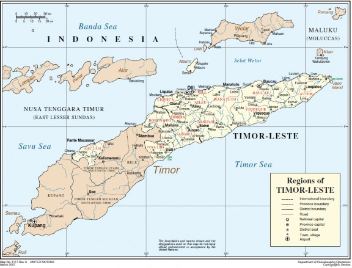

Nationally Determined Contribution
Timor-Leste 2022-2030
‘Everyone has the right to a humane, healthy and ecologically balanced environment and the duty to protect it and improve it for the benefit of the future generations.
The State shall recognise the need to preserve and rationalise natural resources.
The State should promote actions aimed at protecting the environment and safeguarding the sustainable development of the economy.’
Constitution of the Democratic Republic of Timor-Leste, 2002, Section 61
Foreword
The Democratic Republic of Timor-Leste is fully engaged to the requirements of the multilateral process under the United Nations Framework Convention on Climate Change (UNFCCC) and its Paris Agreement. In 2016 Timor-Leste successfully submitted its first NDC/INDC to the UNFCCC Secretariat following the decisions 1/CP.19 and 1/CP. 20. Since Timor-Leste submitted its first NDC, the Government of Timor-Leste has formalized the national institutional arrangements for an integrated response to climate change risks, and some required policy has been in place and several responsible stakeholders accessed to environmental and climate funds to respond to the issues of climate change in the country.
Timor-Leste is one of the lowest contributors to global climate change, but we are the victims of this phenomenon and the impacts are getting more serious, especially for communities in rural areas. Given the fact that Timor-Leste is a Least Developed Country (LDC) and Small Island Development State (SIDS), there is a lot that needs to be done and achieved to safeguard our country’s development and increase the resiliency of our vulnerable communities.
Following the current circumstances, the revised and enhanced Nationally Determined Contribution (NDC) to the UNFCCC and its Paris Agreement builds on Timor-Leste’s first NDC and highlights additional national intentions to integrate climate risk management into all sectoral policies, planning processes, implementation strategies and investment to enhance national well-being. This revised NDC also seeks to support climate-safe transition in Timor-Leste and enhance commitments in response to the newly endorsed National Climate Change Policy and Sustainable Development Goals 2030.
The Government of Timor-Leste believes that the revised NDC will significantly contribute to responding to climate change issues and implementing the initiatives as well as engaging on climate risk governance, nature-positive growth and transition, low carbon development, climate change adaptation and resilience building with national and international support.
The Government of Timor-Leste would like to thank the European Union (EU) in Timor-Leste for their financial and technical support to finalize the revised NDC. We look forward to working with all potential partners for the successful implementation of the updated NDC.
Demétrio do Amaral de Carvalho Secretary of State for the Environment
Introduction
Two decades since the restoration of national independence in 2002, during a time of unpreceded environmental and economic change, and in the wake of a global pandemic, the Democratic Republic of Timor-Leste is at a critical juncture in the nation’s development journey. While the scope, scale, and complexity of climate change risks increase alongside the socio-economic challenges they create, Timor-Leste is resolute in its commitment to protecting national well- being and achieving the priorities set out by National Climate Change Policy (2021), and the Sustainable Development Goals.
As a Least Developed Country and a young nation-state, Timor-Leste continues to face multi-scalar challenges in its efforts to advance critical national development priorities, while sustaining its ambition for social, environmental, and institutional reform, during a time of significant global uncertainty. The direct and indirect impacts of climate change will continue to increase the costs and complexity of enabling equitable economic progress for a nation that has made a minimal contribution to the core drivers of the global climate emergency.
Timor-Leste’s development approach, economic basis, and climate ambitions continue to be defined by various key factors and national circumstances including – but not limited to – the cultures and traditions of the people of Timor-Leste, the natural resources and environments in which the national identity is defined, and the values, principles, and partnerships on which the nation has been built.
The Democratic Republic of Timor-Leste, through its National Constitution, has established a set of fundamental rights for the Timorese people that must, and will, continue to be assured and protected. Protecting Timorese rights to ‘a humane, healthy, and ecologically balanced environment is a central and foundational objective of the National Constitution as well as the cornerstone of Timor-Leste’s response to the impacts and implications of anthropogenic climate change.
Timor-Leste’s Second National Communication illustrates the ongoing influence of forestry and land use on Timor-Leste’s national emissions profile as this sector has shifted dramatically from a major source of emissions between 2007-2013 to a net sink from 2014 to 2015. While overall emissions from the oil and gas industry, which are not attributed directly to Timor-Leste’s national profile, have declined significantly over the 2010-2015 period, the emissions from electricity production and transport have risen over the last decade. Despite a rise in emissions resulting from development underway in Timor-Leste, the nation’s cumulative annual emissions equate to less than 0.003% of global emissions.
While further assistance is required to develop and establish Timor-Leste’s National GHG Inventory and associated MRV systems to further establish clarity and verifiability in relation to national emissions, Timor-Leste continues to advance the activities and financing opportunities required to reduce national emissions where possible.
Timor-Leste’s status as a Least Developed Country and Small Island Developing State is indicative and correlated with various direct implications for national vulnerability and national exposure to climate change risks as well as lack of human capacity, financial resources, and the relevant technology required to implement robust mitigation and adaptation actions.
Climate change poses an immediate threat to national food and water security and the health and welfare of the Timorese people. Without concerted actions to address climate risks, climate change will exacerbate existing inequalities and erode hard-won development gains. As such, the Government of Timor-Leste is committed to pro-actively managing and reducing the impacts of climate change on national economic, physical, environmental, and social security.
In accordance with this objective, this revised and enhanced Nationally Determined Contribution (NDC) to the UNFCCC Paris Agreement builds on Timor-Leste’s original NDC (2016) and further articulates national intentions to integrate climate risk management into all sectoral policies, planning processes, implementation strategies and investments in an effortto insulate nationalwell-being from a growing number of direct and indirect threats posed by anthropogenic climate change. This updated NDC reflects a further matured strategy for supporting livelihoods, protecting environmental integrity, improving social cohesion, addressing food and water security and scaling up access to financing while providing the basis for diversifying economic activities and creating a green economy.
Timor-Leste’s National Climate Change Policy (2021) focuses on improving and increasing platforms for informed and effective participation in decision-making and the design of sustainable development strategies. This National Climate Change Policy creates the basis for improving the enabling environment for evidence-based decision-making, nature-based solutions, long-term capacity building, and integrated risk management. These objectives and principles are reflected in the commitments made through this revised NDC.
Summary of National Contributions
With reference and attention to Timor-Leste’s future and national circumstances, The Government of Timor-Leste is committed to the effective and transparent implementation of the Paris Agreement. In keeping with Article 4.6 of the Paris Agreement and in alignment with Timor-Leste’s status as a Least Developed Country and small island developing State, this Contribution communicates detail of the ‘strategies, plans, and actions for low greenhouse gas emissions development’ and is reflective of Timor-Leste’s special circumstances.
This NDC seeks to support climate-safe transition in Timor-Leste and to reduce the potential for the impacts of climate change to disrupt Timor-Leste’s development ambitions. In addition to the revision and enhancement of commitments in response to the newly endorsed National Climate Change Policy this revised NDC has been aligned with the 2030 targets set out under the Sustainable Development Goals.
Noting with great concern the revised scientific basis presented by Working Group 1 of the Intergovernmental Panel on Climate Change in its submission to the Sixth Assessment Report Review Cycle, The Government of Timor-Leste, through this submission, cites an acute need for immediate, sustainable, predictable, and appropriate support from the international community to access the required financing, capacity building, technology transfer, and technical assistance needed to avert, minimise, and address the loss and damage that will occur if urgent action is not taken at the national, regional, and international level.
In accordance with decision 1/CP.21, paragraph 24 and associated relevant provisions of the Paris Agreement as well as the decisions made by the Conference of the Parties to the United Nations Framework Convention on Climate Change (COP) and the Conference of the Parties serving as the meeting of the Parties to the Paris Agreement (CMA), Timor-Leste hereby communicates an update to its nationally determined contribution to the UNFCCC.
This revised national contribution to the requirements, objectives, and principles of the Paris Agreement includes:
A revised timeframe of 2022-2030.
A revised emissions reference level for the 2010 reference year based on revised assessment methods and the introduction of new activity data utilised through the development of Timor-Leste’s Second National Communication.
The implementation of Timor-Leste’s National Climate Change Policy (2021) as the central policy framework for guiding the national approach to climate change.
Communication of additional detail to enhance clarity, transparency, and understanding
The inclusion of new and updated detail to clarify the scope and focus of the NDC.
The inclusion of new data and updated analysis derived from Timor- Leste’s Second National Communication (2020).
The inclusion of further detail related to the projected national implications of the most recent climate change projections is provided through recent IPCC Reports.
The provision of expanded detail on Timor-Leste’s needs and intentions in relation to the development of a national GHG inventory.
New policy initiatives designed to strengthen implementation
A new commitment to develop a climate change law that will create a legal framework for Timor-Leste’s climate change response and a conditional commitment to passing this law in 2023-24.
The intention to develop a National Climate Change Strategy and Action Plan, to guide the implementation of the National Climate Change Policy utilising financial support available through an existing GCF Readiness grant.
The commitment to accelerate existing and new land tenure reform efforts over the 2021-2025 period in an effort to improve the enabling environment for nature-based solutions.
The introduction of a new initiative to formulate a low carbon development strategy to guide national mitigation and adaptation commitments, activities and approaches.
The introduction of a ‘Nature-Positive’ integrated approach to Timor- Leste’s adaptation, mitigation, and socio-economic development objectives focused on enhancing the integrity, carbon sequestration potential, holistic landscape management and resilience of the nation’s environment and natural capital. This pillar and vision support the diversification and growth of Timor-Leste’s non-oil economy – noting opportunities and commitment to engage and benefit from carbon market mechanisms established and defined under Article 6 of the Paris Agreement, nature-based solutions, the expansion of green tourism, and the growth and diversification of sustainable agriculture practices. This contribution is inclusive of commitments to improve and expand existing terrestrial and marine protected areas and the management of conservation zones.
A reaffirmation of Timor-Leste’s key mitigation arrangements and options set out under its first NDC, inclusive of actions related to the scale-up of renewable energy services, improved energy efficiency and transport efficiency, the promotion of sustainable forest management, and the introduction of improved methods and policies related to waste management in relation to low carbon development path.
A reaffirmation of Timor-Leste’s key adaptation priorities made under its first NDC inclusive of actions related to enhancing food security, protecting water resources, enhancing the capacity of the health sector, the integration of climate risk information into disaster management systems, a focus on building the resilience of terrestrial and coastal ecosystems, actions to improve the resilience of infrastructure, and a commitment to sustainable livestock management.
The formal inclusion of Timor-Leste’s National Adaptation Plan which provides the strategic basis for national adaptation priorities and implementation arrangements in Timor-Leste. This NDC provides a further commitment to this plan and its operationalisation.
A range of Government-wide commitments that aim to support the integration of climate change adaptation and risk management considerations within critical elements of sectoral planning.
The addition of information on key implementation gaps in relation to capacity, finance, and technology.
Timor-Leste’s Third National Communication will be drafted and submitted to public consultation in 2023-2024 and will provide the basis for further assessment of National development progress and climate risk management initiatives.
National Circumstances and Context
Timor-Leste is located on the island of Timor and is bounded to the west by Nusa Tenggara Timur, a province of Indonesia. Timor-Leste has two outlying islands, Ataúro, and the uninhabited Jaco Island. The total land area of Timor-Leste is approximately 15000 square kilometres inclusive of the special administrative Region of Oé-Cusse Ambeno which is located on the western part of Timor Island and is separated from the rest of Timor-Leste by Indonesian territory and borders the Savu Sea.

Figure 1 Map of the Regions of Timor-Leste, United Nations, 2007
The population of Timor-Leste was approximately 1.3m in 2019. Over the last 10 years, the annual population growth rate has fluctuated between 1.7 and 2.5% suggesting that population growth will continue to be a driver of change in Timor- Leste. The municipalities of Díli, Ermera, and Liquiçá are the nation’s most densely populated. The population density in Timor-Leste is 89 per Km2; The totl land area is 14,870 Km2; 32.8 % of the population is urban (432,649 people in 2020).
Timor-Leste is one of the youngest nations in South East Asia following its independence in 2002. The population of Timor-Leste is also young, with over half the total population under the age of 20. Life expectancy at birth in Timor-Leste has risen steadily since the late 1970s increasing from an average life expectancy of 32.6 years in 1978 to 69.5 years in 2019 (World Bank). This rise is attributed to the end of the conflict and struggle for independence and ensuing development progress post-independence that has in part been enabled through the revenues derived from Timor-Leste’s oil and gas reserves. Despite progress made to strengthen national infrastructure and public services and increase employment, poverty in Timor-Leste remains widespread. In 2007 approximately 50% of the population was living below the poverty line, however by, 2014 progress had been made to reduce this rate to approximately 42%. Continued investment in economic development objectives and infrastructure services as well as improved access to education is required to build greater socio-economic resilience in Timor-Leste. Post-independence, Timor-Leste’s economy has been structured around the oil and gas industry. Oil and gas production in Timor-Leste has declined significantly since 2012 and in 2019 petroleum products constituted less than 40% of Timor- Leste’s exports. While oil and gas revenues have been the largest contributor to government revenue overall revenue from oil and gas has declined significantly. Like other small island developing states, the development and upskilling of Timor-Leste’s workforce is vital for the future of the economy. Increasing women’s participation in the formal economy is an ongoing priority.
In 2020 the unemployment rate was estimated at 5.1% and the impacts of COVID-19 have since further exacerbated unemployment along with recent disaster events (such as the flooding events that occurred on the 4th of April in 2021 which were the worst floods experienced in more than 50 years) and the impacts of climate change on food and water security. According to the Human Capital Index in 2020 Timor-Leste ranked in the bottom quartile of the index and below the regional average for East Asia and the Pacific.
Diversification and growth of the non-oil economy, recovery from the impacts of COVID-19, and building resilience to climate change, in Timor-Leste, require an ongoing focus on building agricultural production and markets, improving the structure and scope of Timor-Leste’s (currently limited) tourism sector, land tenure reform, and sustainable and continual investment in resilience building.
Timor-Leste’s financial system is at an early stage in its development and the Government of Timor-Leste is committed to improving inclusivity, promoting and attracting greater foreign investment, and improving the ease of doing business. However, Timor-Leste will continue to require sustainable, predictable, and innovative sources of international financing to minimise loss and damage and manage the impacts of the climate crisis.
Sustainable Development
The Government of Timor-Leste approves the following definition of sustainable development:
‘development based on effective environmental management that meets the needs of the current generation without compromising the environmental balance and the possibility for future generations to meet their needs as well”
Timor-Leste’s Strategic Development Plan 2011-2030 (SDP)1 sets out a vision for 2030 that was shaped by the views of thousands of Timorese people during national consultations held in 2010. This national plan is central to Timor-Leste’s articulation of its sustainable development priorities and focuses on supporting the well-being and living standards of all Timorese people through strategies to help ensure all people have access to adequate food, shelter, healthcare, education, transport services, electricity, and employment.
Sustainable development in Timor-Leste is dependent on achieving social equality and Timor-Leste is committed to creating a gender-fair society where human dignity and women’s rights are valued, protected by law and culture. Timor-Leste’s SDP predates the United Nations Sustainable Development Goals (SDGs) but remains well aligned with many of the 17 SDGs, for instance through its targets to ensure universal access to electricity, healthcare and education before or by 2030. While the existing SDP promotes investment in social capital and creates an institutional framework to support economic development its objectives and scope require revision. On 21 July 2021, the Government resolved to carry out an overhaul and revision of the SDP. This revision will be an opportunity to update key priorities and a means to better incorporate the objectives set out in the Economic Recovery Plan (PRE) which was approved in 2020. The PRE identifies existing issues that continue to impact upon the socio-economic fabric of the country and which were significantly exacerbated by the COVID-19 pandemic.
The PRE presents a set of measures and targets that aim to stabilize the economic sector and improve the living conditions of Timorese citizens in the short and medium-long term. It is aimed at promoting economic diversification as a means to reduce economic dependence on the oil and gas industry. To do so the Government has created an Inter-ministerial Commission for the Study and Readjustment of the Strategic Development Plan. The Commission’s objective is to readjust the Strategic Development Plan 2011-2030, ensuring that the strategies adopted reflect a new national consensus, making it a nationally binding development instrument at all levels, guaranteeing national cohesion and stability in the pursuit of the programs to achieve the national strategic development objectives.
The revision and adjustment of the Strategic Development Plan 2011-2030 is due to be completed and will be approved by early 2023.
The current SDP recognises, and in its revised and adjusted form will fundamentally continue to recognise, that climate change presents a serious threat to Timor- Leste and will create both physical/environmental and political challenges for the nation. The SDP clarifies concern that Timor-Leste’s vulnerability to climate change impacts and status as a developing country recognising the need to ensure Timor-Leste is not ‘constrained or penalised in its development as a result of the past economic growth’ of developed countries. Sustainable development in Timor- Leste requires the balance and consideration of the needs of future generations with the needs and challenges of the present generation.
Current and Projected National Climate Change Impacts
Timor-Leste’s contribution to climate change has been minimal with current national emissions equivalent to 0.003% of global emissions.2
The increasing impacts of climate change and disaster events on Timor-Leste are exacerbating existing socio-economic development challenges, increasing the vulnerability of rural and urban communities, and driving up the aggregate cost of development and public services.
Increasing average temperatures due to climate change will continue to impact Timor-Leste over the coming decades. Timor-Leste’s climate is highly variable and will become more so in future as climate change interacts and exacerbated pre-existing variability and increases the potential for extreme weather events.
Expected warming trends and the resulting impact on Timor-Leste are expected to be compounded by both seasonal variability and the impacts of the El Nino- Southern Oscillation (ENSO). The impact of warming on rainfall patterns and sea- surface temperature is expected to be significant for Timor-Leste. The incidence of extreme rainfall events is expected to increase during the wet season. At the same time, rainfall received during the dry season is expected to decrease overall. These trends will increase flood risks and pose a risk to food and water security. Increasing sea-surface temperatures are expected to accelerate coral bleach and ocean acidification, which in addition to increasing the risk of storm damage and fishing, will compound the pressure on Timor-Leste’s reefs. These direct impacts have severe implications for Timor-Leste’s economy and the livelihoods of which it is comprised of.
Sea level has risen around Timor-Leste at a rate of 5.5mm per year since 1993- well above the global average (2.8mm – 3.6 mm per year.). This elevated rate of SLR is in part attributed to natural fluctuations driven by the El Nino-Southern Oscillation and other natural phenomena. The last National Census conducted in 2015 and the recent National Coastal Vulnerability Assessment suggest that at any given time between 75-85% of Timor-Leste’s population resides in low-land and coastal areas of the country. The Intergovernmental Panel on Climate Change’s Sixth Assessment Report anticipates that sea level in the northeast region of the South Pacific Convergence Zone could rise by over 100cm in comparison to 1995- 2014 levels by 2100. In the event that SLR aligns with high-end estimates over the next decade, the consequences would be significant and devastating for Timor- Leste without major investments to fortify coastlines and relocate communities and infrastructure.
As sea level continues to rise over the coming decades the resulting impacts on freshwater resources, soils, and coastal zones will continue irrespective of short- term changes to global emissions trends. The increased risk of floods, droughts, extreme weather events, coastal flooding, and saltwater intrusion, as well as impacts on coral reefs and fisheries, has the potential to drastically impact food security by increasing the potential for crop loss, reducing agricultural productivity, and driving biodiversity loss and fisheries decline. Increased flooding and drought have direct implications for water quality and water supply. Climate change is a threat to human health in East Timor as impacts on agriculture and water security have the potential to increase the risk of malnutrition and the risk of waterborne diseases.
The Intergovernmental Panel on Climate Change’s 6th Assessment Report has provided the overarching scientific basis for the consideration of current and future climate change risks in Timor-Leste and has been used to support the commitments and priorities set out by this revised and enhanced nationally determined contribution to the Paris Agreement. Examples of the relationships between climate change trends and drivers and the resulting impacts and range of required actions to respond to these risks in Timor-Leste are provided below (non-exhaustive).
|
Development-Pressure-State-Impact-Response Approach (DPSIR) Matrix |
|||
|
Drivers and Pressures |
State Changes |
Impacts |
Responses |
|
Increased Average Temperatures |
Number of days per year with temperatures exceeding 35c increases over the next 80 years. Increased heat stress on coral reefs, human settlements, and terrestrial ecosystems. Ocean Acidification, Coral Bleaching. |
Increased incidence of prolonged heat exposure leads to negative impacts on human health, terrestrial and marine biodiversity, agriculture and economic activity. Detriment to human health, changes to fishery dynamics, loss of livelihoods linked to agriculture and local fisheries, increased evaporation rates and reduced water storage, damage to hard infrastructure, increased energy costs and dependence on air-conditioning, increased national emissions |
In the event that actions to mitigate extreme temperature rise through emission reduction over the next 10 years fail and extreme heatwaves become prevalent over the coming decades the potential national response to adequately combat extreme heat will be limited and restricted to the climate control of indoor environments. |
|
Biodiversity Loss |
Global climate change impacts and localised stressors continue to exhibit the potential to create irreversible tipping points for biodiversity survival ranges. In some cases, biodiversity loss occurs |
Loss of biodiversity will trigger a range of short and long-term negative impacts for Timor-Leste’s environment, economy, and society. |
An integrated approach to biodiversity protection and climate risk management must be taken to avoid irreversible losses. |
|
Sea Level Rise |
Increased erosion rates, increased saltwater intrusion, increased risk of inundation, Increased risk of disaster events |
Damage to infrastructure and environmental assets, reduced agricultural productivity, increased risk of inundation-related disaster events, high economic costs |
Pre-emptive nature- based and ‘hard’ infrastructure solutions as well as the relocation of communities and infrastructure are required to limit the consequences of sea- level rise |
|
Drought Incidence Increase |
Reduction in available freshwater for agriculture and human consumption |
Loss of food security, high economic costs and impacts on GDP, increased health risks linked to sanitation, disruption to education and livelihoods, increased vulnerability of the poor, a decline in living standards and wellbeing, environmental degradation |
Maximize water security through investment, management, coordination, and prioritization at all levels. Continue to develop drought-resistant agricultural methods. |
|
Development-Pressure-State-Impact-Response Approach (DPSIR) Matrix |
|||
|
Drivers and Pressures |
State Changes |
Impacts |
Responses |
|
Extreme Rainfall Events |
Increased potential for flooding, landslides and inundation events Increases the risk of disasters occurring. |
Damage to infrastructure, health hazards, increased incidence of water-borne disease, damage to soils and agriculture, environmental degradation |
In addition to infrastructure improvements addressing coastal impacts, improve drainage and implement strategic methods for maximizing benefit (freshwater collection) and minimizing damage from heavy rainfall. |
|
Rainfall Variation |
Increased rainfall extremes are experienced (drought and heavy rainfall events) |
Freshwater resource availability, agricultural calendars, and habitability of particular areas of Timor- Leste are impacted driving internal migration and changes to livelihoods. |
Increased investment into integrated water resource management and landscape-scale hydrological mapping and analysis is required to increase resource access and build system redundancy |
|
Changes to Timor-Leste’s climate + existing climate variation |
Baseline conditions for Timor-Leste’s environmental services shift changing the nature of key baseline services such as agricultural potential and the productivity of fisheries |
Changes to Timor-Leste’s climate will directly impact human health and the ecosystem services on which it depends. Disrupting economy functionality and societal and cultural norms. |
An integrated approach to biodiversity protection and climate risk management must be taken to avoid irreversible losses. |
|
Changes to human health in a changing climate |
Unmitigated climate change will have direct and specific impacts on human health. |
Increases in heat-related mortality, negative impacts on nutrition, increase risk of and proliferation of disease, increased potential for violence and conflict over resources |
Human well-being- focused policy and long-term investment in human capital are required |
Challenges and Risks to Sustainable Development and Climate Change Resilience-building
While the direct challenges and impacts posed by climate change and existing socio-economic barriers and issues faced by Timor-Leste have been referenced the interaction between these challenges, impacts, barriers and issues requires specific attention in the context of Timor-Leste’s NDC. As a least developed country, climate-vulnerable island state, and oil and gas-dependent economy, facing both fast onset disaster events and the implications of the COVID-19 pandemic – the interrelations and compounding risk factors involved is at the forefront of Timor-Leste’s approach to the development of a revised Nationally Determined Contribution.
National Responses to Climate Change and Progress made since the submission of Timor-Leste’s First NDC
Since the submission of Timor-Leste’s first National Communication in 2014 and the development of Timor-Leste’s first NDC in 2016, the Government of Timor-Leste has further advanced efforts to formalise the national institutional arrangements required for an integrated response to climate change risks.
The 2017 revision of the National Forest policy has set the basis for the sustainable management of forest resources and watersheds. This policy recognizes the range of to provide environmental, social and economic benefits that the natural environment provides for the people of Timor-Leste. Efforts to involve and mobilise communities to protect forests, and engage in sustainable agriculture and other climate-resilient livelihood activities, remains an ongoing priority for Government. Timor-Leste’s National Tourism Policy: Growing Tourism to 2030- Enhancing a National Identity (2017) seeks to further support the development of eco-tourism activities and sustainably grow the emerging tourism sector. In addition, various government initiatives and donor-funded activities have supported participatory land-use planning to improve decision-making and ensure communities are involved with the design of key development activities.
In 2020, Timor-Leste passed the Biodiversity Decree-Law (6/2020) to support national efforts to safeguard the environment, improve legal protections for the environment, and safeguard intergenerational interests. This legislation establishes a legal regime for protecting and conserving biodiversity and is aligned with the requirements of the National System of Protected Areas the existing Basic Law for the Environment. Timor-Leste continues to progress with a number of policies and activities dedicated to supporting the achievement of the Aichi Targets and the delivery of Timor-Leste’s commitments under the Convention for Biological Diversity.
To support efforts to systematically reduce the impacts of climate change, The Government of Timor-Leste launched the National Adaptation Plan process in 2019. The National Adaptation Plan process was informed by vulnerability assessments, national consultation workshops, and close consultations with a range of stakeholders and communities. The National Adaptation Plan was submitted to the UNFCCC in March 2021.
The National Adaptation Plan is an important tool for supporting the most vulnerable in society and ensuring that climate change does not exacerbate existing inequalities. The NAP is designed to build on existing initiatives and cross- cutting priorities. Currently, the National Directorate for Climate Change acts as the technical coordinating body and secretariat to coordinate the implementation of the NAP over the medium to long term.
Gender inequality remains a challenge in Timor-Leste but has been met with a proactive approach. In 2011 the Timor-Leste government approved the establishment of a dedicated working group to support and improve gender equity and equality at the national and district levels. To deliver upon the Government´s commitment to gender equality, recognized in article 17 of the Constitution of the Democratic Republic of Timor-Leste, the Government is committed to strengthening the integration of gender issues and data into the design, analysis, execution and monitoring of national and local policies, programmes, legislation and plans. The Government has established and implemented mechanisms within each Ministry and Secretariat of State, which ensure the integration of a gender perspective in the development of strategies, policies, programs and legislation. The Government has established a mechanism for inter-sectoral cooperation and coordination to ensure concerted action to promote equality and affirm the role of women in Timorese society. Gender Focal Points have been identified in each Ministry/Secretariat of State and an Inter-Ministerial Working Group was established composed of the Gender Focal Points, coordinated by the Secretariat of State for the Promotion of Equality (SEPI), to ensure collaboration effective and gender mainstreaming in Government activities. This initiative has enhanced the Government’s efforts to incorporate gender-related issues into its policies, programmes, plans and legislation.
Timor-Leste submitted its Second National Communication to the UNFCCC in November 2020. The SNC supports Timor-Leste’s contribution to global stocktaking processes as well as responsibilities set out under the Enhanced Transparency Framework. The SNC also helps to further highlight key requirements, gaps, and risks experienced by the nation.
Timor-Leste has continued to comply with its reporting requirements under the UNFCCC despite capacity constraints and limited resources. Timor-Leste has continued to engage with donor partners to establish the required support for establishing a National GHG Inventory.
While Timor-Leste’s contributions to climate change are minimal and adaptation and the minimisation of loss and damage remain core national priorities, Timor- Leste continues to explore options for robust national emissions reduction and overall production of oil and gas in Timor-Leste, as well as total export, has declined in recent years. Solar energy, biogas, hydropower, and efficient cook stoves have been increasingly piloted and utilized as an alternative to fossil fuels however, further progress is conditional on access to increased resources, finance, and technology transfer.
Ensuring energy security and improving access to reliable energy services remains a priority for Timor-Leste. Building resilience to climate change requires increasing investment in infrastructure protection. With the support of the World Bank climate-resilient road infrastructure projects have been progressed in the Dili-Ainaro corridor supporting local livelihoods and business continuity. Pilot projects aimed at delivering solar lighting for rural communities have been trialled that utilise a pay-as-you-go model. Such schemes will be scaled up in future to help enable off-grid communities to access affordable home lighting solutions.
The increasing frequency of extreme rainfall events and longer and more intense droughts due to climate change are likely to continue to exacerbate development challenges and in response, increased emphasis on investment in integrated water resource management and flood protection remains central to Timor- Leste’s ability to build resilience to climate change.
Timor-Leste accessed readiness funding through the Green Climate Fund (GCF) and has successfully secured funding for two GCF projects. The ‘Safeguarding rural communities and their physical assets from climate-induced disasters in Timor-Leste’ project was approved in 2019 and will run until 2026. This $59.4m USD project aims to benefit 522,000 people by addressing the underlying causes of vulnerability in communities through efforts to strengthen the capacity of institutions to assess and manage risks and to implement activities designed to build resilience for local infrastructure. This project includes a focus on improving small-scale rural infrastructure in highly vulnerable areas. In early 2021, Timor-Leste’s second GCF project entitled ‘Community-based Landscape Management for Enhanced Climate Resilience and Reduction of Deforestation in Critical Wetlands’ was approved. This $15.4m USD project has 196,300 target beneficiaries and will support efforts to reduce the national deforestation rate by promoting community-based sustainable natural resource management activities designed to enhance and protect natural resources, improve and protect food and water security, reduce disaster risks, and increase natural carbon sequestration potential. These projects illustrate the increasing importance of community-centric risk management activities and the value of improving capacity to better manage vital natural resources. Community vulnerability assessments have recently been scaled up and will continue to be undertaken to help improve localised planning and resource mobilisation in communities.
Timor-Leste began its Technology Needs Assessment process in 2020. This process will be completed to help identify technology needs that are critical to Timor-Leste’s mitigation and adaptation priorities. Through financing for capacity- building access via the CTCN, efforts are underway to improve the capacity to install and maintain solar PV systems in Timor-Leste.
Long-term capacity-building support continues to be the lynchpin for accelerating progress to minimise climate risks in Timor-Leste and the Government has continued to advance multiple initiatives that seek to further improve institutional capacity to manage complex development challenges and rapidly accelerating climate change risks.
Timor-Leste continues to work closely with key partners such as the United Nations Development Programme (UNDP), United Nations Environment Program, Japan International Cooperation Agency (JICA), the European Union, and the Green Climate Fund.
Timor-Leste’s National Climate Change Policy was endorsed and published in the official gazette as Government Resolution no. 8/2022, of 1 March. This policy provides a new central policy framework for Timor-Leste’s response to climate change, as well as the basis for a new climate change-focused national legal framework. This policy focuses on the principle of national ownership, the promotion of equity, social inclusion, and informed participation. This policy is also closely connected with the expected revision of Timor-Leste’s National Development Plan and will seek to further embed principles of sustainable development, evidence-based decision making, and ecosystem-based adaptation approaches into national development planning.
Overview of Key Climate Financing Programs in Progress
Safeguarding rural communities and their physical and economic assets from climate-induced disasters in Timor-Leste
With support secured through the Green Climate Fund, Timor-Leste is working with United Nations Development Programme (UNDP) on a $25.68m USD program which aims to benefit the equivalent of 15% of the population or approximately 175,840 people in six target municipalities. This program is expected to help avert economic losses equivalent to 11.5% of GDP through the implementation of activities aimed at improving knowledge and skills regarding key infrastructures and building water supply, irrigation and flood defence systems.3
Enhancing Early Warning Systems to build greater resilience to hydro- meteorological hazards in Timor-Leste
Through the Green Climate Fund, Timor-Leste is working with United Nations Development Programme (UNDP) to address the urgent need for integrated climate information services, covering oceans, and proactive disaster risk management approaches founded on impact-based forecasting and end-to-end MHEWS. This will be achieved through four inter-related components such as:
Strengthened delivery model and legislation for climate information and multi-hazard early warning services;
Strengthened observations, monitoring, analysis and forecasting of climate and its impacts;
Improved dissemination and communication of risk information and early warning;
Enhanced climate risk management capacity.4
Community-based Landscape Management for Enhanced Climate Resilience and Reduction of Deforestation in Critical Watersheds.
Through the Green climate Fund Timor-Leste is working with the Japan International Cooperation Agency (JICA) on a USD10 million program to promote a proven Community-Based Natural Resource Management (CBNRM) approach for national application in regions of Timor-Leste’s most food-insecure forest adjacent communities. The CBNRM approach focuses on the participatory development of natural resource management and climate-resilient cropping practices that enable communities to forgo shifting cultivation and reduce GHG emissions from deforestation and forest degradation. The CBNRM mechanism has been developed from 15 years of JICA’s experience learning from technical cooperation projects in Timor-Leste. This is an innovative approach compared to previous development interventions, since it puts local communities at the centre of the development of norms, rules and regulations on agricultural and forest land use, while also being integrated with a policy roadmap for national application.5
IKAN Adapt: Strengthening the adaptive capacity, resilience and biodiversity conservation ability of fisheries and aquaculture-dependent livelihoods in Timor-Leste
Government of Timor-Leste, represented by the National Directorate of Fisheries and Aquaculture (NDFA) of the Ministry of Agriculture and Fisheries (MAF), working with the Food and Agriculture Organization of the United Nations (FAO) to support livelihood resilience while conserving key biodiversity in Timor-Leste. The “IKAN Adapt: Strengthening the adaptive capacity, resilience and biodiversity conservation ability of fisheries and aquaculture-dependent livelihoods in Timor- Leste” project is being led by the FAO with the LDCF and the GEF7 Biodiversity Focal Area. The IKAN Adapt project has the objective to “Enable fisheries and aquaculture stakeholders in Timor-Leste to adapt to climate change, increase resilience and also conserve biodiversity”, which will help Timor-Leste’s fishery and aquaculture-dependent communities become more resilient to climate variability and change, and enhance efforts for the conservation of aquatic biodiversity.
Timor-Leste faces significant challenges in addressing biodiversity loss and climate change impacts and achieving sustainable management and utilization of its aquatic and coastal resources due to weak governance, organizational capacities, institutional arrangements, limited technical capacity and knowledge, and limited resources for the development and implementation of plans on adaptation and biodiversity. The project will work on three key interlinked components to contribute to the project objective, such as:
|
Component 1: |
Enabling national fisheries and aquaculture-related policies and programmes, legal frameworks and local management institutions to address climate change, current variability and biodiversity conservation. |
|
Component 2: |
Enhancing climate change adaptation and biodiversity conservation capacity and practices in fishing and fish farming communities (coastal and inland). |
|
Component 3: |
Strengthening institutional capacity through the development of climate and biodiversity-related information systems, information management and monitoring operations.6 |
Enhancing human resources, systems and procedures in Timor-Leste to effectively engage with the Green Climate Fund
The Government of Timor-Leste sees the Green Climate Fund as a vital opportunity to build the resilience of its economy and natural resources to the significant impacts of climate change. The development of a list of climate investment priorities and a national GCF project development manual are seen as key steps toward developing a suite of projects designed to help secure the health, welfare, security and economic development of the people of Timor-Leste. This GCF readiness request builds on the initial project. Specifically, the project aims to communicate the important outcomes of the initial project to a comprehensive range of stakeholders, elaborate a national monitoring and evaluation system based on the initial scoping work, fill knowledge gaps identified by developing a range of financing strategies, build on initial scoping work to develop a national accredited entity, and develop a set of projects based on the national climate investment priorities identified in the initial project. The project is intended to enable the preparation of a number of GCF projects that are aligned to Timor-Leste’s primary adaptation needs and consistent with the country’s national priorities. Implemented by National Directorate for Climate Change, General Directorate for Environment, and the Secretary of State for Environment under the Coordinating Minister for Economic Affairs, the budget for this project is USD 695,038.00.7
EU-Intra ACP Pacific Adaptation to Climate Change and Resilience Building programme
Timor-Leste continues to benefit from inter-regional cooperation and knowledge sharing via the EU-Intra ACP Pacific Adaptation to Climate Change and Resilience Building Program. Timor-Leste also continues to cooperate with the European Union to advance environmental protection and increase its capacity to engage with carbon markets and benefit from the arrangements set out under Article 6 of the Paris Agreement.
The European Union is providing a solution to enable communities to address massive deforestation, land degradation, erosion, and landslides through community reforestation and carbon farming programme. With an investment of EUR 16.9 million, the European Union is a key to the Government of Timor-Leste’s reforestation drive with three flagship programmes: Ai ba Futuru-Trees for the Future, Rai Matak-Green Land and Carbon Farming.
In four Municipalities of Timor-Leste, Ai ba Futuru has already planted more than two million commercial trees, improved wood processing efficiency, and encouraged the Timorese private sector to invest. This has provided both a major boost for economic diversification and made a huge difference to farmers’ livelihoods. It has created jobs too.
Implemented by Oxfam, Rai Matak has established village-based plant nurseries to grow seedlings and pays small tree holders annual incentives to reforest their land by planting and maintaining the trees. This enables them to generate an income while taking real action on climate change.
The third European Union action is high-level technical assistance (EUR 2.2 million) to the Secretariat of State for the Environment under the GCCA+. This supports the establishment of a robust land-sector Green House Gas (GHG) reporting and accounting system to measure land-based carbon emissions through operational tools and establishes legal and governance systems. The funding supports a credible, transparent, sustainable and participative carbon sequestration reward system in Timor-Leste and at the same time motivates farmers in rural areas with additional incentives.
Adapting to climate change and enabling sustainable land management through productive rural communities in Timor-Leste (in the development – concept approved stage)
This project aims to increase climate resilience and reduce land degradation in rural communities through an ecosystem-based adaptation (EbA) model.
The project targets two watersheds which have been selected as sites for the proposed project: the Dasidaro in Baucau and Laclo in Manatuto Watersheds.
Dasidaro Watershed (Sungai Dasidaro) covers an area of ~157 km2 on the border of Lautém and Baucau municipalities. Laclo Watershed (Sungai Laclo), is a large watershed (~1,390 km2 which is ~9% of the country’s land area) in central Timor- Leste, covering areas of Aileu, Ainaro, Manufahi and Manatuto municipalities.8
This NDC maintains the direction and priorities set out under Timor-Leste’s INDC while expanding the detail and specificity of the commitments, initiatives and engagements made over the 2022-2030 period.
The NDC has been recast around 4 commitment areas:
|
1 |
Climate Risk Governance, |
|
2 |
Nature-Positive Growth and Transition, |
|
3 |
Low Carbon Development, |
|
4 |
Climate Change Adaptation and Resilience Building. |
These four pillars are described in relation to specific activities and a set of conditional and unconditional commitments. All four policy pillars create direct and indirect contributions to climate change mitigation and adaptation outcomes and draw on the existing legal and policy framework which defines Timor-Leste’s approach to climate risk management. Together these four pillars provide in-depth information consistent with the requirements set out under Article 4, Paragraph 6 of the Paris Agreement.
Climate Risk Governance
The Government of Timor-Leste is committed to ensuring that national policy, strategy, law, and governance arrangements can be shaped and adapted as required to tackle the multi-faceted challenges posed by climate change impacts, intensified disaster events, environmental protection requirements, and socio- economic development needs. To ensure Timor-Leste can develop national strategies, policies and plans that are responsive to the best available science and informed by foresight and innovation the Government of Timor-Leste is advancing a range of initiatives to reform and adapt governance to better support national climate risk management objectives. This NDC clarifies the intention to create a robust legal and strategic framework for climate risk governance.
|
1. Climate Risk Governance |
||
|
Activity |
Commitment type |
|
|
1.1 – National Climate Change Strategy and Action Plan |
Endorse Timor-Leste’s National Climate Change Policy as endorsed in 2021 as a framework for guiding the national approach to climate change. This policy will trigger the development of a National Climate Change Strategy and Action Plan which will serve as the central planning document to guide the implementation of the National Climate Change Policy and the achievement of this NDC |
Unconditional |
|
1.2- Climate Change law |
Develop a national climate change law that will create a legal framework for Timor-Leste’s climate change response and pass this law in 2023/2024. This law will seek to improve vertical and horizontal coordination and cooperation across and between public and private sector entities, introduce new requirements to assess and address infrastructure risks, and define new public decision-making and budgetary requirements designed to improve the management of complexity and trade-offs. |
Unconditional |
|
1. Climate Risk Governance |
||
|
Activity |
Commitment type |
|
|
1.3 – Institutional Capacity Development |
The National Institutional Capacity Development Program of Action has been implemented since 2007 through National Capacity Self-Assessment. UNDP and the Government of Timor-Leste have implemented the Cross-cutting Capacity Development project (CCCD) “Strengthening targeted national capacities to improve decision-making and mainstreaming global environmental obligations into national development priorities”. The project will assist the Government of Timor-Leste to achieve the national priorities it has set in its National Strategic Development Plan for 2011 to 2030 and in its current annual National Priorities by enhancing national capacities. This project aims to build the capacity of the agencies to engage effectively together in a series of concurrent national assessment and planning exercises in order to strengthen future planning and collaboration. More specifically, this project will address specific cross-cutting capacity development priorities identified in the NCSA in order to support Timor-Leste’s sustainable development and capacity to full fill obligations under the three Rio Conventions. Timor-Leste will strengthen the institutional capability to manage information systems and conduct national monitoring and evaluation of development programming and progress. While some specific capacity-building actions remain highly conditional on securing relevant technical support and financing (for example those referred to in 3.1a, 3.1b and 3.2d), the commitment to prioritise the enhancement of national capacity is unconditional. |
Unconditional |
|
1.4 – Gender Responsive Governance |
The Inter-Ministerial Working Group, coordinated by the Secretary of State for Equality and Inclusion and comprised of representatives of each Gender Working Group continues to advance inter-sectoral coordination and collaboration. Efforts will continue to promote gender mainstreaming at the district level and the continued development of effective local democratic governance. Through the establishment and expansion to district-level gender working groups, supported and coordinated by the Secretary of State for Equality and Inclusion analysis and engagement around the nexus between climate change, gender issues, and wider social inclusion issues will be promoted and integrated within planning processes. |
Unconditional |
Nature-Positive Growth and Transition
Timor-Leste is home to globally significant ecosystems such as tropical rainforests, mangroves, wetlands, and a vast tropical maritime zone. Forest degradation, mangrove destruction, and unsustainable agricultural practices continue to threaten Timor-Leste’s environmental resilience, ecosystem services, freshwater resources, and arable land.
As a result, nature-based solutions and engagement with opportunities enabled under Article 6 of the Paris Agreement, offer an important means for Timor- Leste to progress activities that create tangible sustainable development, climate change mitigation, and climate adaptation co-benefits.
Nature-based solutions offer a means to reduce disaster risks, increase carbon sequestration, and support rural livelihoods through improved environmental management and the introduction of new holistic approaches to land use.
Timor-Leste’s 2016 NDC focused on key activities such as sustainable agriculture, livestock management, sustainable forestry, and other key activities for delivering climate adaptation and mitigation outcomes. This approach is further formalised through this revised NDC which calls for further integrated approaches to mitigation, adaptation, and sustainable socio-economic development through an enhanced focus on nature-based solutions.
With as much as 80% of Timor-Leste’s population reliant on agriculture and subsistence livelihoods, Timor-Leste is highly dependent on the ecosystems and environmental assets that have defined life and culture in Timor-Leste for generations. Over 70% of agricultural households in Timor-Leste grow staple crops such as rice, cassava, and maize. Climate change continues to exacerbate the intensity of droughts and heavy rainfall events – disrupting seasonal rainfall patterns and having a negative impact on crop yields. These impacts, paired with land degradation due to unsustainable land-use practices and a growing population, have placed additional pressure on the productivity of the approximately 500,000 hectares of cultivated land. Timor-Leste has an estimated annual deforestation rate of 1.7% and an estimated forest degradation rate of 5.8% which is one of the highest rates in South Asia and South-East Asia. Deforestation and forest degradation are driven by overgrazing, farmland expansion, growing demand for fuelwood and charcoal, urban expansion and logging. In recent years Timor- Leste’s forestry and land-use sector has transitioned from a net contributing source of carbon emissions to a carbon sink. In 2010 estimated emissions from the FOLU sector were 279.38 GgCO2e and rose to 2858.84 GgCO2e by 2012, however by 2014, FOLU sector emissions were estimated at -1438.8 GgCO2e. Restoring, protecting and enhancing Timor-Leste’s environments and landscapes have the distinct potential to support both national mitigation and adaptation objectives by increasing the carbon sequestration potential of natural carbon sinks and reservoirs while also helping to increase climate resilience (through activities that serve to reduce flood risk, improving the protection of natural water catchments, manage coastal erosion, and protect soils).
Table 1 Example benefits derived from key natural habitats in Timor-Leste
|
Benefit Type |
Mangroves |
Forests |
|
Example Ecosystem Services |
Example Ecosystem Services |
|
|
Livelihood support |
Livelihood support through provisioning services, wood, fuel, food, traditional medicine, shade for livestock, fisheries, tourism value |
Livelihood support through provisioning services, wood, fuel, food, traditional medicine, shade for livestock, tourism value |
|
Risk Management |
Coastal Protection, erosion control, wind barrier. |
Water retention, natural aqueducts |
|
Ecosystem Services |
Water Filtration |
Soil protection, nutrient cycling, cooling |
|
Biodiversity Protection |
Habitat for various terrestrial and marine species |
Forests are the main habitat for the majority of terrestrial biodiversity |
|
Climate Regulation |
Carbon Sink and Reservoir |
Carbon sink and Reservoir |
Importantly these activities that both help reduce the drivers of climate change and help provide protection from the impacts of climate change can also create significant co-benefits for building local village economic capacity, livelihoods, human wellbeing, and sustainable development objectives. Timor-Leste understands the Paris Agreement and its objectives as closely compatible and aligned with the targets set out under the Sustainable Development Goals and The Convention on Biodiversity’s Aichi Targets. For instance, improving forest management and engaging in activities to restore and enhance forests offers multiple co-benefits. For instance, sustainable forest management in Timor- Leste has the potential to increase carbon sequestration (mitigation), protect nutrient cycles from climate risks thereby protecting agriculture and food security (adaptation), and will help reduce vulnerability to flooding and landslides (disaster risk reduction). All of these benefits in turn support and contribute to key targets associated with the SDGs (e.g. SDGs 1-Poverty Reduction, 2-Zero Hunger, 6-Clean Water and Sanitation, 13-Climate Action, 15-Life on Land). Furthermore, these activities would also be aligned with Aichi Target #5’s objective to halve the rate of loss of all-natural habitats by 2020. Timor-Leste’s National Biodiversity Strategy of Action (NBSAP) provides a comprehensive strategy and linked actions for mobilizing a multi-stakeholder approach to the protection of the nation’s biodiversity assets. Strategic Action 2 on Timor-Leste’s NBSAP is to ‘promote nature-based and community-based sustainable tourism and ecotourism’ while Action 7 calls for the intensification of ‘massive tree planting including mangrove reforestation to rehabilitate critical and damaged habitats and ecosystems and degraded water sheds’.
In keeping with these interlinked objectives, this NDC seeks to enable the growth of a new ‘nature-positive’ economic sector consistent with Timor-Leste’s existing policy framework, international commitments, the National Constitution, and national circumstances. This approach has been heavily influenced by the passage of the Decree-Law establishing the Legal Regime for the Protection and Conservation of Biodiversity (Decree-Law nº 6/2020).
Timor-Leste aims to incentivise and enable a new vision and approach to Timor- Leste’s environmental assets and resources by focusing on new opportunities to pilot and scale-up innovative nature-based solutions as a new and complementary source of employment and income. These activities can safely run in parallel to Timor-Leste’s oil and gas industry on which public revenues and significant employment currently depend while also helping to diversify employment opportunities and support national tourism objectives. Limiting reliance and pressure on extractive activities will help to advance a new green economy with greater potential to sustain the needs of both current and future generations. Timor-Leste’s intentions in relation to this pillar are dependent on improved access to additional financial and technical support from the international community. This vision for nature-positive growth is further defined and represented through the following description of objectives, commitments, and activities.
|
2. Nature-Positive Growth and Transition |
||
|
Activity |
Commitment type |
|
|
2.1 Environmental protection framework |
Through the Decree-Law on the National System of Protected Areas (2016) and the Decree-Law establishes the Legal Regime for the Protection and Conservation of Biodiversity (2020), the Government of Timor-Leste will continue to scale up the enforcement and surveillance as well as community-led management practices required to maintain existing and new conservation zones, marine protected areas, and national parks. At least 10% of Timor-Leste’s total combined land and the marine area will be protected from extractive activities. |
Unconditional |
|
2.2 – Land-use planning |
Land-use planning and environmental licensing regimes play a significant role in guiding development and protecting the well-being of the population. The National Spatial Planning Base Law No. 6 of 2017 passed in 2017 (together with Decree-Law 8 (2021) which addresses the legal regime on the classification and qualification of land and Decree-Law 35 (2021) which relates to the National Territorial Planning legal regime) supports the principles of environmental sustainability and provides the basis for reforming the conditions and requirements that will shape development planning on an ongoing basis. The Timor- Leste government will focus on ensuring land-use planning processes and requirements are aligned with national climate change objectives and continue to build the necessary regulation and enforcement mechanisms to do so over the 2022-2030 period. The legislation passed in 2021 on the Territorial Planning Instruments further strengthens this path by establishing that the territorial plans shall clearly detail the motivations of its provisions on the grounds of the acquired knowledge of the environmental transformations, as well as identify and consider the natural values and resources (namely the coastal and marine areas, protected areas and other relevant areas for nature conservation and biodiversity) and forest and agriculture areas. |
Unconditional |
|
2.3 – Land tenure reform |
The Government of Timor-Leste will accelerate existing and new land tenure reform efforts over the 2022-2030 period to improve the enabling environment for nature- based solutions and projects that allow Timorese people to benefit from opportunities arising through Article 6 of the Paris Agreement and emerging global carbon markets. Timor-Leste intends to capitalise on mitigation and adaptation co-benefits that can be derived from carbon farming, ecosystem restoration, agroforestry, blue carbon management, and other activities that help to expand and protect Timor-Leste’s carbon sinks and reservoirs. This commitment is contingent on access to climate financing and technical assistance. |
Conditional |
|
2. Nature-Positive Growth and Transition |
||
|
Activity |
Commitment type |
|
|
2.4 – Sustainable Forest Management |
Improve sustainable forest management and reduce forest degradation and deforestation through natural regeneration initiatives, awareness-raising, promotion of customary practices such as ‘tara bandu’ and the expansion of conservation and protection laws and enforcement mechanisms. With improved GHG inventory data and monitoring resources, this objective will be strengthened through the introduction of a forest carbon stock protection target. This commitment is contingent on access to climate financing and technical assistance. |
Conditional |
|
2.5 – Enhancing Carbon Sinks |
Timor-Leste’s conditional reforestation target is to plant, grow and monitor as close to one million trees annually and to establish a national system for tracking progress against this target. Efforts will be made to strengthen the protection and conservation of coastal and marine ecosystems against the impacts of climate change including through the protection and enhancement of mangroves. This commitment is contingent on access to climate financing and technical assistance. |
Conditional |
|
2.6 – Improving livelihoods and environmental resilience through carbon markets |
Establish a policy framework that enables income generation at the local village level where farming communities working cooperatively will be able to aggregate their activities to be able to participate in international carbon trading platforms; this mechanism should also be designed to enable and incentivise climate repair activities that support healthy ecosystems, marine zone protection, blue carbon reservoirs, afforestation and reforestation projects, and soil enhancement, and landscape restoration through increased engagement with international carbon markets. This commitment is contingent on access to climate financing and technical assistance. |
Conditional |
|
2.7- Promoting sustainable and climate- smart agriculture |
The Government of Timor-Leste will promote improved agricultural practices, climate-smart agriculture, agroforestry, composting, and community-led rehabilitation of degraded land. Developing cost- effective, replicable methods and best practices to support agricultural productivity, livelihoods, and food security will require ongoing multi-stakeholder cooperation and reliable financial resourcing. This commitment is contingent on access to climate financing and technical assistance. |
Conditional |
Low Carbon Development
Timor-Leste’s development has been highly dependent on national fossil fuel resources and will remain so until access to alternative economic models and markets are identified. Economic diversification is a priority for any and all small island nations due to their propensity to rely on a narrow economic base. Increased dependency on aid and a high potential for increased indebtedness are also trends that are likely to hamper real economic gains. While Timor-Leste will continue to pursue effective economic diversification this diversification and its prospects must be understood through the lens of an LDC nation that is facing climate change impacts and intensified disaster events while also seeking to progress an array of governance reform priorities. Timor continues to export petroleum products to satisfy a small proportion of global fossil-fuel needs. However, Timor-Leste does maintain that larger more diversified and developed countries must take greater accountability for the immediate and drastic transition away from high emissions activities and should support countries like Timor-Leste with the tools and resources to diversify their economic opportunities. As a Least Developed Country and a climate-vulnerable developing nation, Timor-Leste references Articles 2.2, 4.3, and 4.19, regarding the concept of ‘common but differentiated responsibilities” when developing the practicality and scope of its national emissions reduction commitments.
The Government of Timor-Leste aims to facilitate the conditions required to enable sustainable low carbon development and will continue to seek options for increasing both the energy efficiency and economic efficiency of national energy services. In addition to technological changes made within the energy sector, Timor- Leste will continue to bolster national carbon sequestration potential as a means to reduce net domestic emissions in conjunction with any activities undertaken to transfer carbon emission reduction units offshore through modalities enabled under Article 6 of the Paris Agreement.
Timor-Leste’s greenhouse gas emissions are negligible and equivalent to .006% of total global annual emissions. Overall greenhouse gas emissions in Timor-Leste have fluctuated significantly over the last two decades (2000-2020). The drivers of this fluctuation have been sensitive to changes in the forestry and land-use sector as well as the changing productivity levels and resulting emissions profile within the oil and gas industry. Timor-Leste’s Second National Communication utilised a methodology that is aligned with the Tier 1 methodologies set out under the 2006 IPCC Guidelines which differs from the methodology used for Timor-Leste’s First National Communication which utilised the revised 1996 IPCCC Guidelines. This has resulted in revised emissions data for the 2010 reference year which formed the basis of the baseline for Timor-Leste’s First NDC. This baseline for 2010 was stated as 1483 GgCO2 and excludes emissions from oil and gas production and biomass utilisation. Due to the use of a revised methodology for the Second National Communication as well as with the inclusion of updated activity data and new assumptions9, the baseline emissions level for 2010 referenced within Timor-Leste’s INDC has been revised and a new reference level will be established once the GHG inventory is formally established and the processes required to validate a new emissions reference level are clarified. In keeping with national circumstances, Timor-Leste’s Least Developed Country Status, and required assistance to formalise a robust GHG Inventory, Timor-Leste maintains the intention to refrain from setting a quantified emissions reduction target. The following conditional and unconditional initiatives and activities are priority measures for reducing GHG emissions over the 2022-2030 time frame:
|
3. Low Carbon Development |
||
|
Activity |
Commitment type |
|
|
3.1 Establishing an enabling environment for Low Carbon Transition |
||
|
3.1a- National GHG Inventory |
Timor-Leste will develop a robust national GHG inventory and enhance the collection and analysis of activity data and support the development of Timor- Leste’s mitigation objectives. While the establishment of a robust national GHG inventory remains conditional on securing relevant technical support and financing, the commitment to create a national framework for the inventory is unconditional. |
Unconditional |
|
3.1b – Low Carbon Development Strategy |
Timor-Leste is willing to formulate a national low- carbon development strategy to support long- term strategic options for defining Timor-Leste’s development goals in alignment with the Paris Agreement and the 1.5 degree Celsius temperature goal (in the context of Article 4.1). The formulation of a low- carbon development strategy is resource-intensive and progressing it in Timor-Leste will require financial and technical support as well as technology transfer. |
Conditional |
|
3. Low Carbon Development |
||
|
Activity |
Commitment type |
|
|
3.1c – Ratification of the Kigali Amendment |
To ratify the Kigali Amendment to the Montreal Protocol and in turn, develop a Hydrofluorocarbons (HFCs) Phase-out management plan that expands the coverage of Timor-Leste’s NDC to include activities required for an economy-wide phase-out of HFCs. While the commitment to ratify the Kigali Agreement to the Montreal Protocol is unconditional, implementation capacity will require access to additional technical support and financing to ensure capacity is secured to develop a Hydrofluorocarbons (HFCs) Phase- out management plan that expands the coverage of Timor-Leste’s NDC to include activities required for an economy-wide phase-out of HFCs. |
Unconditional |
|
3.1d- Biennial Transparency Report |
Timor-Leste is committed to increasing emissions reporting transparency and aims to voluntarily opt into the submission of BTR’s starting in 2024. This commitment is highly contingent on access to the required financial support and TA needed to establish Timor-Leste’s emissions reporting systems. |
Conditional |
|
3.1e – Renewable Energy Decree-Law |
The government has prepared and is currently consulting with stakeholders on a draft decree-law that establishes the legal framework for registration, installation, exploration, licensing, supply, marketing, promotion, financing and incentives, for the production and use of electricity derived from renewable energy sources. It also establishes the regulation of the activity of production of electric energy destined for self- consumption. The decree-law will apply to natural or legal persons, national or international, public or private, with commercial or self-consumption purposes who install produce and explore electrical energy using renewable energy sources in Timor-Leste. The government aims to approve this law in 2022-2023. |
Unconditional |
|
3.2 Scaling up renewable energy technologies |
||
|
3.2a – Investment in renewable energy solutions |
Timor-Leste will scale up investment in renewable energy systems as a means to reduce diesel consumption and improve the resilience of rural communities through engagement with innovative blended financing mechanisms, LDC -focused financing facilities, and private sector engagement. Timor-Leste will prioritise investments that increase energy security and access in rural communities and will seek increased investment and engagement of the private sector to assist with the scale-up and use of low carbon technologies. |
Conditional |
|
3. Low Carbon Development |
||
|
Activity |
Commitment type |
|
|
3.2b – Biofuels and Biomass Potential |
Research will be undertaken to improve the understanding of the economics and potential of biofuel production and the use of sustainable biomass as feedstock for bioenergy production in Timor-Leste. |
Conditional |
|
3.2c – Biogas and Sustainable Livestock Management |
Timor-Leste is committed to adopting and upscaling sustainable livestock management methods inclusive of biogas production. Sustainable livestock methods have the potential to reduce aggregate annual GHG emissions derived from livestock however, the capacity to fully exploit these opportunities remains conditional on securing relevant technical support and financing. |
Conditional |
|
3.3 Oil and Gas Industry Regulation |
||
|
3.3a – Oil and Gas Industry Operations |
The Government of Timor-Leste will work with the oil and gas industry to identify strategies and plans to reduce emissions and minimise the emissions intensity of industry operations. Targeted initiatives will be progressed to reduce fugitive emissions from offshore oil and gas production facilities. |
Unconditional |
|
3.3b – Extractive Industry Transparency and Reporting |
Timor-Leste has been a member of the Extractive Industries Transparency Initiative (EITI) since 2008. Timor-Leste seeks to increase transparency through the establishment of an online database that provides information on all extractive companies operating in the petroleum sector. This and other disclosure based- actions will be pursued throughout the 2022-2030 period in keeping with EITI recommendations and best practices |
Unconditional |
|
3.4 Energy Efficiency Improvements |
||
|
3.4a – Enabling cost-effective energy efficiency improvements |
Through the development and implementation/ enforcement of product efficiency standards, energy- efficient building designs, new fuel standards, closer regulation of industrial processes, and the energy efficiency improvements that can be derived from changes to primary energy sources used by communities, there is potential to increase the overall efficiency of Timor-Leste’s energy sector. To do so research will be conducted to improve the understanding of key opportunities and improve the cost-benefit analysis available on potential demand-side efficiency improvements in Timor-Leste. |
Conditional |
|
3. Low Carbon Development |
||
|
Activity |
Commitment type |
|
|
3.5 Enabling the Energy Efficient Transport Sector Growth |
||
|
3.5a – Vehicle Standards |
Decree-Law (No. 30/2011) prohibits the import of light passenger and mixed vehicles that are more than 5 years old (from the date of their original manufacture to the date of import) with exceptions in place for particular circumstances and vehicles. Timor-Leste will continue to use these standards to control vehicle imports and revise them as required to suit national policies and priorities. |
Unconditional |
|
3.5b Transport System Master Plan |
A transport master plan will be developed to build sector resilience and reduce emissions derived from the transport sector. This plan will create policy entry points for promoting and supporting climate-friendly public transport options and non-motorised transport solutions where possible. |
Conditional |
|
3.6 Waste Management and Waste Minimization |
||
|
3.6a Waste Management Innovation and Reform |
Landfill, urban, industrial, household, i, and medical waste management and wastewater management are priorities for improvement in Timor-Leste due to continued issues with open dumping, burning of waste, localised pollution, and poor sanitation. The Government of Timor-Leste will pursue support to help exploit opportunities and implement solutions. Through biogas production, composting, and recycling as well as the potential to develop market-based mechanisms to help minimise waste and improve sustainable waste management options through for instance improved incineration technology, investment and private sector engagement will be used to scale up solutions. The scale of this commitment and the scope of its outcomes is wholly dependent on access to climate finance. |
Conditional |
Adaptation and Resilience Building
Timor-Leste is committed to building climate risk resilience and will continue to invest in opportunities to increase climate adaptation outcomes in the interest of national society.
The localised implications of climate change in Timor-Leste continue to be exacerbated by current economic development status, Timor-Leste’s colonial history and conflict sensitivity, as well as existing capacity constraints.
To prepare for and minimise the impacts of climate change on Timor-Leste’s environment, peoples, cultures and economy, Timor-Leste’s National Adaptation Plan (2021) has been developed around seven priority areas: 1) infrastructure adaptation, 2) biodiversity and ecosystem adaptation, 3) health sector adaptation, 4) agriculture sector adaptation, 5) water sector adaptation, 6) adapting disaster risk reduction, and 7) tourism sector adaptation.
Timor-Leste recognises the need to advance activities in alignment with Article 7.1 of the Paris Agreement and its recognition of the importance of enhancing adaptive capacity as well as the importance of Article 7.8 which cites the vital importance of international cooperation as a means to enable robust and meaningful adaptation outcomes.
|
4. Climate Change Adaptation and Resilience Building |
||
|
Activity |
Commitment type |
|
|
4.1 Operationalising the National Adaptation Plan |
||
|
4.1a NAP Institutional Arrangements |
A designated high-level body for overseeing interagency coordination required to implement NAP objectives will be established. This body will be supported by the establishment of technical working groups. |
Unconditional |
|
4.1b Vulnerability and Risk Assessments |
The National Adaptation Plan will be translated into specific interventions in part through the use of integrated vulnerability assessments and localised risk mapping exercises. These products will help identify priority actions and investments. Climate and disaster risk mapping and risk modelling will be used to influence decision-making and support planning at the national, sub-national, and local levels. |
Unconditional |
|
4.1c Community Consultation |
The Government of Timor-Leste will establish and introduce a subnational and community-based consultation mechanism to support community empowerment, private sector engagement and subnational implementation of climate change policy implementation activities. |
Unconditional |
|
4.1d Adaptation Communication |
Timor-Leste will communicate a shortlist of adaptation priorities and associated funding gaps in 2024. This document will include an update on NAP implementation as well as an update on climate change impacts and projected risks. |
Unconditional |
|
4.2 Food and Water Security |
||
|
4.2a Diversifying Food Production |
Financial resources will be secured to support research into climate-resilient crop species and climate-smart agricultural practices. |
Unconditional |
|
4.2b Integrated Water Resource Management |
Increasing pressures on freshwater supply must be managed to maintain water access for domestic and agricultural purposes while also ensuring that changes to water availability do not increase emissions from the water sector due to the increasing use of water pumps and other infrastructure. Landscape-level integrated water resource management approaches will be reflected in Timor-Leste’s revised development plans and other relevant public sector plans. Integrated water resource management projects will remain a key target investment area to support through climate financing proposals. |
Unconditional |
|
4.2c Sustainable Livestock Management |
Timor-Leste Government is committed to revising and improving the regulation and planning frameworks for livestock management to better incorporate sustainability objectives and climate change risk considerations. Technical assistance will be required to advance this commitment. |
Conditional |
|
4. Climate Change Adaptation and Resilience Building |
||
|
Activity |
Commitment type |
|
|
4.2d Sustainable Fisheries |
Sustainable management of Timor-Leste’s fisheries is required to alleviate the multitude of stressors on the marine environment. The expansion of marine protected areas and reduction of localised stressors (e.g. pollution, overfishing) on inshore fisheries will be used in conjunction with the creation of alternative livelihood options to strengthen the adaptive capacity of the marine environment, fishing sector, and its associated natural ecosystems. |
Unconditional |
|
4.3 Health Sector Adaptation |
||
|
4.3a National Health Adaptation Plan |
Timor-Leste will continue to implement the National Health Adaptation Plan for the prevention of health risks and diseases arising from climate change (2019). While the final version of the NHAP is still under review, the plan has been implemented since 2019 in principle. A final version of the plan will be presented to the board of directors of the Ministry of Health by 2023. While the commitment to implement the overarching objectives of the NHAP is unconditional, many elements of this plan will be contingent on securing relevant technical support and financing. |
Conditional |
|
4.3b Budgetary Allocation for Health |
A conditional commitment to create dedicated budgetary allocations for additional health services and health infrastructure is required to increase preventative measures required due to the impact of climate change on human health. |
Conditional |
|
4.4 Enhanced Climate and Disaster Risk Management and Prevention |
||
|
4.4a Early Warning Systems |
Through the aforenoted and recently approved Green Climate Fund project which focused on early warning systems, Timor-Leste will
Timor-Leste’s NAP highlights the development of early warning systems and decision support system tools for policymakers as a clear priority and a means for averting climate change-induced loss and damage. |
Conditional |
|
4. Climate Change Adaptation and Resilience Building |
||
|
Activity |
Commitment type |
|
|
4.4b Social Protection and Risk Transfer |
Timor-Leste maintains a Contingency Fund which is supported by the annual State Budget. This fund supports national responses to natural disasters and climate-change-related impacts. The use of funds prioritises support for affected communities and in particular the most vulnerable people in society. The fund is under the budget supervision of the Ministry of Finance. Under special circumstances, the Government is able to seek authorization from the National Parliament to utilize funds. The ongoing ability of this fund to provide adequate support on an annual basis is contingent on national revenue, access to climate financing, and technical support for response and recovery operations. Timor-Leste is actively looking into the potential to develop forecast based-financing initiatives to help protect the most vulnerable in society. |
Conditional |
|
4.4c Climate Information Systems |
The Government of Timor-Leste will coordinate activities and financial resources required to increase analytical capacity for climate risk. New systems will be developed to increase connectivity between data owners and support will be enlisted to increase the capacity to collect, interpret, and disseminate climate risk information products and tools. Whilst this commitment as stated above is unconditional, it remains conditional on also securing relevant technical support and financing to implement it. |
Unconditional |
|
4.5 Climate Resilient Infrastructure |
A national infrastructure assessment and audit will be conducted to improve investment planning and improve capital cost projections. This assessment will be used to develop new basic infrastructure requirements designed to minimise exposure and vulnerability to current and projected climate change risks. This commitment is conditional on external financing and technical assistance. |
Conditional |
|
4.6 Tourism Sector Adaptation |
Growing Timor-Leste’s eco-tourism sector is vital to the broader adaptation and diversification of Timor- Leste’s economy. Efforts will be made to increase biodiversity protection and as well as sustainable tourism opportunities. Through the use of small grants, concessional loans, and other incentives, Timor-Leste will seek to establish tourism as a major sustainable national export and source of GDP over the 2022-2030 period. This commitment will be reflected in budgetary decisions and allocations. |
Unconditional |
|
4. Climate Change Adaptation and Resilience Building |
||
|
Activity |
Commitment type |
|
|
4.7 Education Adaptation and Workforce Transition |
||
|
4.7a Increasing Investment in Education Services |
Investment in education services, facilities and national training programs will be increased year on year by a set percentage agreed by 2023. This initiative will represent a renewed commitment to increasing investment in human capital and livelihood diversification alongside commitments made in relation to healthcare. Tailored training programmes will be used to bolster institutional capacity as well-targeted investments in IT infrastructure. This commitment is conditional and will be contingent on improved analytical products to assess education improvement opportunities and livelihood diversification options. |
Conditional |
|
4.7b Increasing Aid Sustainability and Impact |
The government will develop a policy to guide minimum requirements for donor funding to ensure that a set minimum percentage of external financing is earmarked for capacity-building activities and local employment. |
Unconditional |
MEANS OF IMPLEMENTATION
2022-2030
Means of implementation
The Government of Timor-Leste requires urgent technical support and financing to establish a robust National Greenhouse-Gas (GHG) Inventory to support its ability to report to the UNFCCC and comply with the requirements of the Paris Agreement. The Government of Timor-Leste requires support to strengthen the legal framework and institutional capacity for land administration through the introduction of new land legislation that recognises customary land tenure and provides state-managed negotiation frameworks and to use this reform to improve the enabling environment for the nature-based solutions and carbon markets mechanisms called for under Article 6 of the Paris Agreement.
The enabling factors that will enable climate-safe transitions in Timor-Leste can be summarised through the following focus areas:
Access to Financing: To help reduce climate and disaster impacts, strengthen infrastructure, and protect livelihoods, biodiversity, and ecosystems reliable and accessible financing is required at a much greater scale.
Institutional Reform
Capacity Development and Human Capital Investment: A range of partnerships and technical assistance is required to build the capacity required for Timor-Leste to effectively deliver and accelerate the achievement of national development priorities and requirements. Continued investment in human resources, education, and information exchange will continue to be a lynchpin for a successful climate-safe transition in Timor-Leste.
Climate risk information and analysis – Improving climate risk information, data availability, and analytical capability is the first port of call for effectively minimising loss and damage from climate change in Timor-Leste. Research partnerships and donor support to facilitate effective technology transfer will remain a priority for the foreseeable future.
Economic Diversification – Timor-Leste’s high dependency on the oil and gas industry continues to create high exposure to oil price volatility and Timor-Leste’s development objectives will benefit from a diversified economy and increased growth in sectors with high potential for job creation such as tourism. Timor-Leste’s NDC commitments are deeply interlinked with national sustainable development priorities.
Examples of Timor-Leste’s priorities for Capacity Building, Finance and Technology Transfer Priorities are as follows:
|
1. |
Timor-Leste requires assistance to improve its capacity to understand and assess climate risks and improve national climate information services. |
|
2. |
Specific and additional financial and technical assistance is required to improve national capacity to cope with and address the nexus of disaster and climate change-related impacts alongside sustainable development priorities and the mid-term impact of the COVID-19 pandemic. |
|
3. |
In order to improve the ability to design and implement effective nature- based solutions –targeted investment and financing are required to support the design and regulation of these approaches. |
|
4. |
Timor-Leste’s ability to invest in and scale up renewable energy and improve national GHG reporting is dependent on ongoing technical support, technology transfer, and concessional financing. |
|
5. |
Due to the vulnerability of Timor-Leste to climate-driven rainfall extremes integrated water management capacity and associated resourcing is urgently required. |
|
6. |
Research assistance and access to expertise are required to support food security and the long-term transition and adaptation of traditional livelihoods. |
|
7. |
Climate change will continue to have a direct impact on public health and investment in Timor-Leste’s health care systems will be required to improve capacity to cope with changing needs and growing pressures on public health infrastructure. |
|
8. |
Timor-Leste’s capacity to avert and minimise loss and damage will be dependent on the capacity and technology needed to map vulnerabilities and assess damage risk and potential losses. |
|
9. |
Timor-Leste requires specific targeted support to minimise and avert loss and damage and seeks technical assistance and dedicated financing in alignment with the objectives set out under the Warsaw International Mechanism for Loss and Damage. Technical support is required to increase access to risk transfer solutions, build capacity to improve social protection mechanisms and increase overall access to risk financing solutions. |
|
10. |
Targeted financing is required to build coastal resilience and minimise the risk of coastal community displacement |
|
11. |
Technology transfer and reduction of the landed cost of key new technologies are required to support the acceleration and execution of Timor-Leste’s mitigation and adaptation objectives. |
Information to facilitate clarity, transparency and understanding
|
1. Quantified information on the reference point, including, as appropriate, a base year |
||
|
a. |
Reference year(s), base year(s), reference period(s) or other starting point(s) |
Reference year 2010 |
|
b |
Quantifiable information on the reference indicators, their values in the reference year(s), base year(s), reference period(s) or other starting point(s), and, as applicable, in the target year |
Timor-Leste requires financial support and technical assistance to progressively improve MRV capacity, establish a National GHG Inventory, and diversify access to the data and information required to accurately contextualize National NDCs; |
|
c |
For strategies, plans and actions referred to in Article 4, paragraph 6, of the Paris Agreement, or policies and measures as components of nationally determined contributions where paragraph 1(b) above is not applicable, Parties to provide other relevant information |
Timor-Leste’s first National Climate Change Policy was endorsed in 2021. This policy will guide national efforts to minimise Timor-Leste’s contribution to climate change as well as seek to reduce the impact of climate change on the country. Timor-Leste is committed to developing a National Climate Change Strategy and Action Plan to further define and accelerate the implementation of the National Climate Change Policy. This policy, plan, and strategy will be further operationalised by Timor-Leste’s intention to pass an innovative climate change- focused decree-law. This law will help provide a robust legal framework and governance structure for managing climate risks and support the delivery of sustainable development outcomes and priorities. This law will support Timor-Leste’s ability to engage in activities that enhance the environmental integrity and carbon sequestration potential of Timor-Leste’s environment. This law will create the legal mandate and basis for Timor-Leste’s National GHG Inventory. The significant progression in the institutional arrangements for managing Timor-Leste’s response to climate change enabled by the proposed climate change law and the establishment of the National GHG Inventory (contingent on required technical and financial support) is expected to enable Timor-Leste to submit its first Biennial Transparency Report in 2024. To further guide the development of Timor-Leste’s non-oil economy, Timor-Leste is willing to formulate a low carbon development strategy in accordance with Article 4, paragraph 19 of the Paris Agreement by 2025. Timor-Leste will undertake a range of actions in relation to and within sectors not covered as quantitative commitments. |
|
d. |
Target relative to the reference indicator, expressed numerically, for example in percentage or amount of reduction |
Timor-Leste has not set a numerical target for national emissions reductions due to the ongoing requirement for assistance and resources to develop an economy-wide GHG Inventory and associated Monitoring Review and Verification processes. This revised NDC is premised on data provided by the Second National Communication and underpins the policy commitments and direction set out within Timor-Leste’s National Climate Change Policy (2021). |
|
e. |
Information on sources of data used in quantifying the reference point(s) |
Timor-Leste’s Second National Communication, 2020 |
|
f. |
Information on the circumstances under which the Party may update the values of the reference indicators |
The development of the required institutional arrangements, data collection regimes, and dedicated capacity required to establish Timor-Leste’s National GHG Inventory is in progress. The establishment of the GHG Inventory will enable a full review of Timor-Leste’s NDC enabling the review of reference indicators as required and recommended. Any change to reference indicators will be premised on improving the quality, transparency, verifiability, and technical accuracy of the basis of the NDC. Changes to reference indicators may also be required specifically due to
|
|
2. Time frames and/or periods for implementation |
||
|
a. |
Time frame and/ or period for implementation, including start and end date, consistent with any further relevant decision adopted by the Conference of the Parties serving as the meeting of the Parties to the Paris Agreement (CMA); |
This updated NDC covers the timeframe from 1 January 2022 to 31st December 2030. Progress against this NDC will be tracked through national reporting and via submissions of Biennial Transparency Reports starting in 2024 |
|
b. |
Whether it is a single-year or multi-year target, as applicable. |
|
|
3. Scope and Coverage |
||
|
a. |
General description of the target; |
Timor-Leste is a Least Developed Country that is highly vulnerable to the impacts of climate change while also reliant on revenue from its oil and gas resources. Timor-Leste’s NDC is an economy-wide commitment to establishing a ‘nature-positive’ resilient development pathway. The term ‘nature-positive’ refers to the emphasis of this NDC on the use of nature-based solutions to help build national resilience, increase the carbon sequestration potential of national carbon sinks and reservoirs, protect national development gains, and grow the non-oil economy through the positive growth of sustainable agriculture and green tourism. The geographical coverage of this NDC is applied to all areas within Timor-Leste’s geopolitical boundaries (and is inclusive of the Special Administrative Region of Oé-Cusse Ambeno (RAEOA)) Mitigation and adaptation activities in Timor-Leste are highly interlinked and often indistinct. Enhancing Timor-Leste’s environment through the sustainable management of forests, improved environmental protection measures, climate-smart agricultural techniques, and the introduction of new technologies has the potential to simultaneously enable progress against national adaptation and mitigation objectives. To improve the strategic approach to climate risks and improve active management of sector emissions and the carbon intensity of development activities a long-term approach to climate risk governance and development planning will be established. Timor-Leste progressing a series of activities and has defined objectives that serve the purpose and intent of the Paris Agreement. Timor-Leste’s ability to implement many activities will be contingent upon timely international support and access to reliable and adequate finance. Key Mitigation and Adaptation Actions and Strategies
|
|
b. |
Sectors, gases, categories and pools covered by the nationally determined contribution, including, as applicable, consistent with IPCC guidelines; |
Key sectors covered by this NDC:
The Democratic Republic of Timor-Leste has taken into consideration paragraphs 31(c) and (d) of decision 1/CP.21. The sectors considered reflect the coverage of categories and sectors consistent with the Intergovernmental Panel on Climate Change (IPCC) Inventory Guidelines. Greenhouse gases covered by this NDC are: Carbon Dioxide (CO2) Methane (CH4) Nitrous Oxide (N2O) |
|
c. |
How the Party has taken into consideration paragraphs 31(c) and (d) of decision 1/ CP.21; |
The scope of Timor-Leste’s NDC is limited by data deficits and capacity limitations which reduce the potential to develop quantifiable and technically achievable targets. Timor-Leste requires ongoing and targeted technical support to clarify methodological options and strategies to manage data uncertainty and requires resources to develop the relevant monitoring, reporting and verification systems and regimes. Timor-Leste’s national circumstances and associated capacity- building needs will continue to require attention and support from national, regional, and international partners, donors, and stakeholders. The impact of climate change and disaster events on Timor- Leste’s people, environment, and economy continues to negatively affect development progress which has implications for ongoing capacity-building goals required to progress climate change objectives. |
|
d. |
Mitigation co- benefits resulting from Parties’ adaptation actions and/or economic diversification plans, including a description of specific projects, measures and initiatives of Parties’ adaptation actions and/or economic diversification plans. |
The ‘Nature-Positive’ approach established by Timor-Leste’s NDC is based on the intention to build socio-economic as well as environmental resilience through nature-based solutions and sustainable development programmes that create mitigation co- benefits by increasing carbon sequestration, protecting existing carbon reservoirs and sinks, enhancing sustainable land and agricultural practices, and increasing investment in low carbon and renewable energy-based development solutions. |
|
4. Planning Process |
||
|
a) Information on the planning processes that the Party undertook to prepare its NDC and, if available, on the Party’s implementation plans, including, as appropriate: |
||
|
i. Domestic institutional arrangements, public participation and engagement with local communities and indigenous peoples, in a gender-responsive manner; |
The Council of Ministers is the highest decision-making authority in addressing the implementation of national priorities as well as mainstreaming climate change issues and consideration into sectoral policies and plans. Therefore, the Council of Ministers will delegate, as per its Organic Law, to the responsible Ministry for the Environment to oversee the development and implementation of the NDC. The Democratic Republic of Timor-Leste’s Revised NDC (2022- 2030) has been informed by the development of the nation’s Second National Communication (SNC) which was submitted to the UNFCCC in 2020. While the SNC provided the analytical basis, the policy basis was informed by the consultations and collaborative processes that have led to the endorsement of Timor-Leste’s first National Climate Change Policy in 2021. Various national stakeholders have been engaged directly to support the articulation of the priorities that this NDC addresses. The development of this NDC falls under the mandate of the Ministry responsible for the Environment. The oversight of this NDC is held by the Secretary of State for Environment. To further improve the governance arrangements required to address climate change issues and risks the directorates under the General Directorate for Environment were reorganized in 2019 in accordance with the principles of sustainable development:
The National Directorate for Climate Change led by the Director for Climate Change is responsible for coordinating the development and implementation of the National Climate Change Policy as well as leading coordination on climate change-related affairs with international organisations and bilateral partners on environmental affairs, sustainable development, and climate risk management. DNAC works with focal points within line ministries to coordinate and progress climate action in Timor-Leste and has supported the compilation of data required to produce this NDC. Timor-Leste’s Climate Change Working Group was established in 2017 by ministerial decree to help guide consultations on Timor-Leste’s climate change policy and associated plans. This working group is comprised of key ministries, donors, international organisations, universities, and civil society and is chaired by the DNAC. The CCWG will be the primary mechanism for coordination and consultation with stakeholders in implementing the NAP priorities undertaken by government entities, agencies, civil society, and private sector actors. The working group will :
Timor-Leste’s National Adaptation Plan, submitted to the UNFCCC on the 31st of March 2021, provides information on the priority Adaptation activities that the Government has committed to over the short, mid, and long-term time frames. This Plan has been directly reflected in the priorities of this NDC. Timor-Leste’s National Climate Change Policy provides the basis for the implementation and coordination of Timor-Leste’s NDC and will be further supported through the development of a dedicated action plan. Existing legislation, including Timor-Leste’s Environment Basic Law and Biodiversity Decree-Law, creates the legal basis for progressing many elements of this NDC. The overarching intent of this NDC will be supported through the development of new legislation and regulations as required. Timor-Leste will continue to develop the appropriate arrangements required to support the technology transfer and capacity building required to implement this NDC. This updated NDC has been guided by a gender-responsive approach and has considered the nexus between climate change issues and gender inequality. Timor-Leste’s approach to climate change has and will continue to be informed by the need to enable sustainable development outcomes that can only be achieved if women and girls are empowered within society. The Government of Timor-Leste has established a mechanism for inter-sectoral cooperation and coordination to ensure concerted action to promote equality and affirm the role of women in Timorese society. The Government has established and implemented mechanisms within each Ministry and Secretariat of State, which ensure the integration of a gender perspective in the development of strategies, policies, programs and legislation. This NDC supports the rights of Indigenous Peoples through its commitment to progressive landscape management, livelihood protection, community consultation mechanisms, and a climate- resilient nature-positive approach to development objectives. Timorese indigenous cultures, values, and beliefs are protected and maintained through the respect of customary law (lisan) within the national justice system and the ongoing commitment to environmental protection that is evidenced in new and historical legislation and policy. This NDC has benefited from the understanding of traditional environmental management approaches such as tara bandu and its priorities and objectives have been derived from an integrated consideration of both traditional knowledge and empirical science. Timor-Leste’s commitment to human rights and consultative and responsive governance will continue to require and benefit from financial and technical support to ensure policy implementation and service delivery can continue to progress and develop without disruption from climatic impacts and disaster events. This NDC has been informed by underlying priorities and rights which are important to all Timorese including the right to health, the right to food, and the right to education which continues to shape the basis of resilient development in Timor- Leste. |
|
|
ii. Contextual matters, including, inter alia, as appropriate: |
||
|
a. |
National circumstances, such as geography, climate, economy, sustainable development and poverty eradication; |
– See the section entitled ‘National Circumstances and Context’
|
|
b. |
Best practices and experience related to the preparation of the nationally determined contribution; |
outcomes and will be used to further progress the objectives of this NDC. The ‘nature-positive’ approach taken by Timor- Leste will increase incentives to improve overall custodianship of the environment and help to articulate methods and means to derive multiple co-benefits from locally-managed nature- based solutions (i.e. Tara Bandu, carbon farming, sustainable forestry practices). |
|
c. |
Other contextual aspirations and priorities acknowledged when joining the Paris Agreement; |
Timor-Leste’s vulnerability to climate change is multi-faceted as the impacts of climate change will have direct physical implications for Timor-Leste while at the same time global shifts in energy technologies will expose Timor-Leste’s economy to transition risks. Timor-Leste seeks support from Parties to build national capacity, increase investment in resilience building, and accelerate technology transfer. Timor-Leste is already experiencing the negative impacts of a changing climate and is dealing with the loss and damage associated with rainfall extremes and sea-level rise and views the UNFCCC and Paris Agreement as central governance mechanisms for reducing climate change-related risks and increasing national resilience. |
|
d. |
Specific information applicable to Parties, including regional economic integration organizations and their member States, that have reached an agreement to act jointly under Article 4, paragraph 2, of the Paris Agreement, including the Parties that agreed to act jointly and the terms of the agreement, in accordance with Article 4, paragraphs 16–18, of the Paris Agreement; |
N/A |
|
e. |
How the Party’s preparation of its NDC has been informed by the outcomes of the global stocktake, in accordance with Article 4, paragraph 9, of the Paris Agreement; |
N/A |
|
f) Each Party with an NDC under Article 4 of the Paris Agreement that consists of adaptation action and/or economic diversification plans resulting in mitigation co-benefits consistent with Article 4, paragraph 7, of the Paris Agreement to submit information on: |
||
|
i. How the economic and social consequences of response measures have been considered in developing the NDC; |
As an LDC, Timor-Leste faces financial and technical constraints that restrict the national capacity and ability to fully quantify the economic and social consequences of both climate change impacts and the costs and implications of NDC implementation. As a result, Timor-Leste’s commitments and priorities have been highlighted alongside the urgent need for scaled-up access to climate financing, technology transfer, and capacity building. Timor-Leste’s economy and GDP are highly dependent on fossil fuel revenues and Timor-Leste must be supported to address both potential transition risks as well as the direct and indirect implications of climate change and disaster events. Timor-Leste will continue to assess and estimate risks and potential losses using the existing capacity to do so. |
|
|
ii. Specific projects, measures and activities to be implemented to contribute to mitigation co- benefits, including information on adaptation plans that also yield mitigation co- benefits, which may cover, but are not limited to, key sectors, such as energy, resources, water resources, coastal resources, human settlements and urban planning, agriculture and forestry; and economic diversification actions, which may cover, but are not limited to, sectors such as manufacturing and industry, energy and mining, transport and communication, construction, tourism, real estate, agriculture and fisheries. |
See ‘Overview of Key Climate Financing Programs in Progress ‘ |
|
|
5. Assumptions and methodological approaches, including those for estimating and accounting for anthropogenic greenhouse gas emissions and, as appropriate, removals: |
||
|
a. |
Assumptions and methodological approaches used for accounting for anthropogenic greenhouse gas emissions and removals corresponding to the Party’s nationally determined contribution, consistent with decision 1/CP.21, paragraph 31, and accounting guidance adopted by the CMA; |
|
|
b. |
Assumptions and methodological approaches used for accounting for the implementation of policies and measures or strategies in the nationally determined contribution; |
Timor-Leste will apply specific assumptions and methodologies, where relevant when reporting on various policies and measures in its Biennial Transparency Reports. |
|
c. |
If applicable, information on how the Party will take into account existing methods and guidance under the Convention to account for anthropogenic emissions and removals, in accordance with Article 4, paragraph 14, of the Paris Agreement, as appropriate; |
As described under ‘5a’ |
|
d. |
IPCC methodologies and metrics used for estimating anthropogenic greenhouse gas emissions and removals; |
CO2, CH4, N2O emissions will be derived using the 2006 IPCC Guidelines as per ‘5a’. Particular methodologies used will depend on the availability of data. |
|
e. |
Sector-, category- or activity-specific assumptions, methodologies and approaches consistent with IPCC guidance, as appropriate, including, as applicable: |
|
|
i. Approach to addressing emissions and subsequent removals from natural disturbances on managed lands; |
Timor-Leste’s Second National Communication provides detail on existing methodologies approaches which will be reviewed and revised as required in keeping with ongoing efforts to establish formalised national GHG accounting systems. |
|
|
ii. Approach used to account for emissions and removals from harvested wood products; |
As Above |
|
|
iii. Approach used to address the effects of age-class structure in forests; |
As Above |
|
|
f. |
Other assumptions and methodological approaches used for understanding the nationally determined contribution and, if applicable, estimating corresponding emissions and removals, including: |
|
|
i. How the reference indicators, baseline(s) and/or reference level(s), including, where applicable, sector-, category- or activity-specific reference levels, are constructed, including, for example, key parameters, assumptions, definitions, methodologies, data sources and models used; |
Timor-Leste’s Second National Communication 2020 provides detail on existing methodologies approaches which will be reviewed and revised as required in keeping with ongoing efforts to establish formalised national GHG accounting systems. |
|
|
ii. For Parties with nationally determined contributions that contain non- greenhouse-gas components, information on assumptions and methodological approaches used in relation to those components, as applicable; |
Timor-Leste’s NDC has been informed by the data and assumptions as well as projections included within the IPCC’s 6th Assessment Report with particular reference made to overarching risks described by the physical science basis provided by Working Group 1, the Summary for Policymakers entitle ‘Climate Change 2022: Impacts, Adaptation, Vulnerability, and the AR6 Regional Fact Sheets. Methods and priorities for Actions have been informed directly by recent hazard and disaster events and localised climate projections and studies that have been conducted by organisations such as CSIRO and Geoscience Australia. |
|
|
iii. For climate forcers included in nationally determined contributions not covered by IPCC guidelines, information on how the climate forcers are estimated; |
N/A |
|
|
iv. Further technical information, as necessary; |
N/A |
|
|
g. |
The intention to use voluntary cooperation under Article 6 of the Paris Agreement, if applicable. |
Timor-Leste views cooperative approaches to the market and non-market mechanisms under Article 6 of the Paris Agreement as an important instrument to raise mitigation ambition and support environmental integrity while promoting sustainable development and welcomes the opportunity to participate in cooperative approaches. Timor-Leste is committed to exploring opportunities to benefit from the mechanisms and potential established under Article 6 of the Paris Agreement and how it can use these mechanisms either to support the achievement of its own NDC or to provide additional mitigation outcomes to support NDC attainment by other countries. |
|
6. How the Party considers that its NDC is fair and ambitious in light of its national circumstances |
||
|
a. |
How the Party considers that its nationally determined contribution is fair and ambitious in the light of its national circumstances; |
As a climate-vulnerable LDC, Timor-Leste must balance the often competing priorities associated with sustainable economic development requirements, social protection needs, climate and disaster risk management priorities, and climate change mitigation ambitions within national prioritisation processes and with limited national budgetary resources. Timor-Leste will therefore prioritise mitigation activities that create socio-economic co-benefits. Through the development of nature-based solutions that help to manage climate risks, support livelihoods, and sequester carbon – Timor-Leste will seek to create a new economic model for nature-based climate investment that supports the national achievement of the sustainable development goals while supporting the protection and improvement of livelihoods. Despite a negligible national contribution of 0.003% of aggregate global emissions and high dependency on revenue from the oil and gas industry, Timor-Leste is committed to contributing to the collective efforts required by the Paris Agreement. |
|
b. |
Fairness considerations, including reflecting on equity; |
This NDC update demonstrates significant national progress to develop the appropriate governance arrangements and economic innovation required to enable climate-safe transition in Timor-Leste. The Democratic Republic of Timor-Leste continues to strive to achieve its vision for equitable and sustainable development despite limited resources and the challenges posed by localised climate impacts, disaster events, and the implications of the COVID-19 pandemic. To maintain and evolve existing commitments in the first NDC and address the context provided by the Second National Communication, Timor-Leste has created a robust proposed legal and policy-based architecture for a long-term response to climate change that is premised on a nature-positive approach. |
|
c. |
How the Party has addressed Article 4, paragraph 3, of the Paris Agreement; |
Timor-Leste’s updated NDC reflects a commitment to existing commitments set out under its first NDC while introducing an ambitious new proposed governance arrangement and policy basis for the Nation’s long-term climate change response. |
|
d. |
How the Party has addressed Article 4, paragraph 4, of the Paris Agreement; |
This updated NDC reflects ‘common but differentiated responsibilities and respective capabilities, in the light of different national circumstances and as an LDC and SIDS Timor-Leste has provided detail on a national strategy for resilient low carbon development in keeping with Article 4 paragraph 6. |
|
e. |
How the Party has addressed Article 4, paragraph 6, of the Paris Agreement. |
|
|
7. How the NDC contributes towards achieving the objectives of the Convention as set out in Article 2 |
||
|
a. |
How the nationally determined contribution contributes towards achieving the objective of the Convention as set out in Article 2; |
This updated NDC provides detail on the ways in which Timor- Leste is and will continue to protect Timorese People from the threat of climate change and proposes a range of mechanisms for enhancing national governance of this long-term threat while upholding efforts to eradicate poverty. Since Timor-Leste’s first NDC submission the Government has produced a Second National Communication, National Adaptation Plan, and endorsed the first National Climate Change Policy. Timor-Leste continues to protect and maintain diverse cultures and rural livelihoods through attention to and projection of national environmental assets and biodiversity as exemplified through ongoing land management reforms and the Biodiversity Decree-Law. Timor-Leste has successfully accessed the climate financing required to progress resilience-building activities that will benefit local communities through collaboration and partnership with donors and implementing entities. Timor-Leste’s adaptation commitments are aligned with an evidence-based approach and consideration of long-term IPCC climate projections and their implications for Timor-Leste. The ‘Nature Positive’ growth strategy introduced by this NDC shows a strong commitment to deriving mitigation co-benefits from resilience-building activities and nature-based solutions and exemplifies the Paris Agreement’s call for context-relevant approaches to achieving the long-term temperature goal. Despite high reliance on the oil- based economy and negligible contribution to global emissions and irrespective of LDC status, Timor-Leste is willing to progress a long-term approach to domestic mitigation action through the development of a low carbon development strategy and a range of sector-specific actions which will also increase national GHG accounting transparency and accuracy. Timor-Leste has committed to translating the Paris Agreement into national legal implications through the development of climate change legislation and a long term approach to climate risk governance. |
|
b. |
How the nationally determined contribution contributes towards Article 2, paragraph 1(a), and Article 4, paragraph 1, of the Paris Agreement. |
|